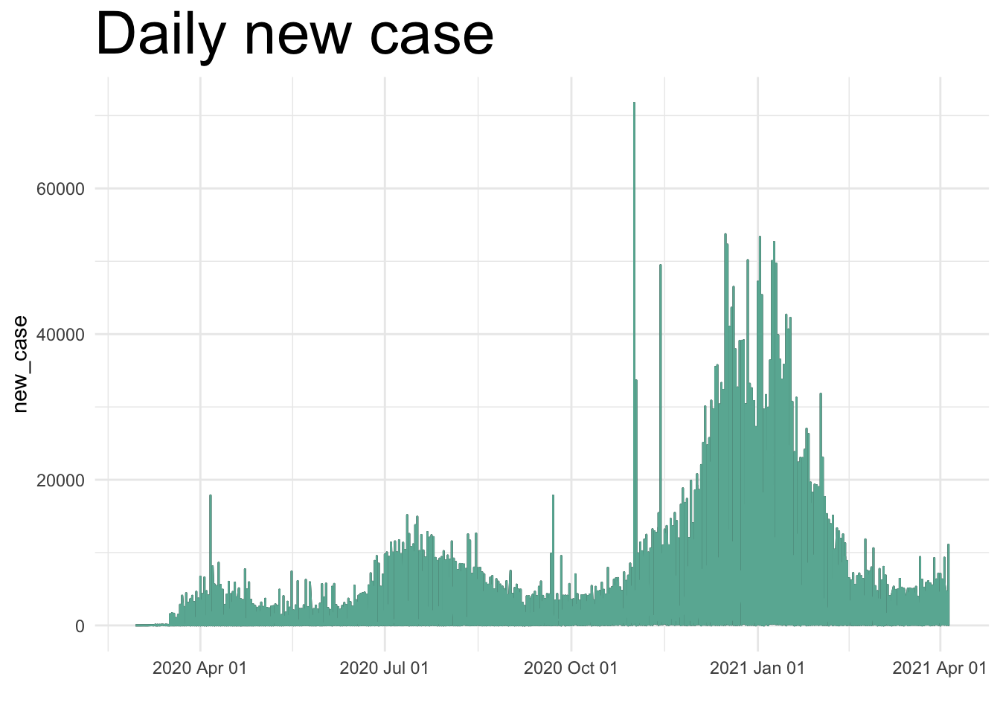
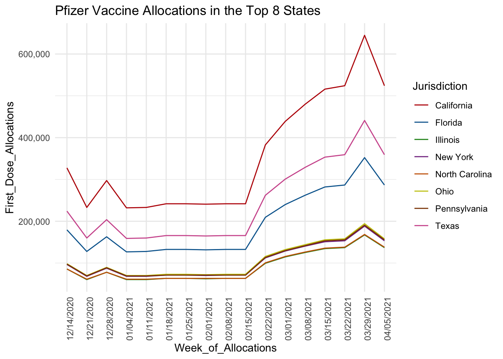
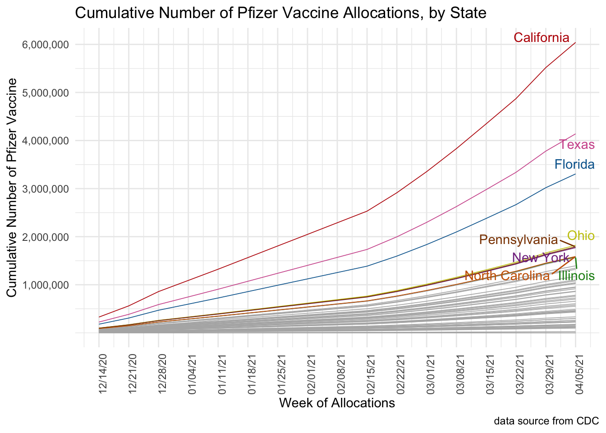
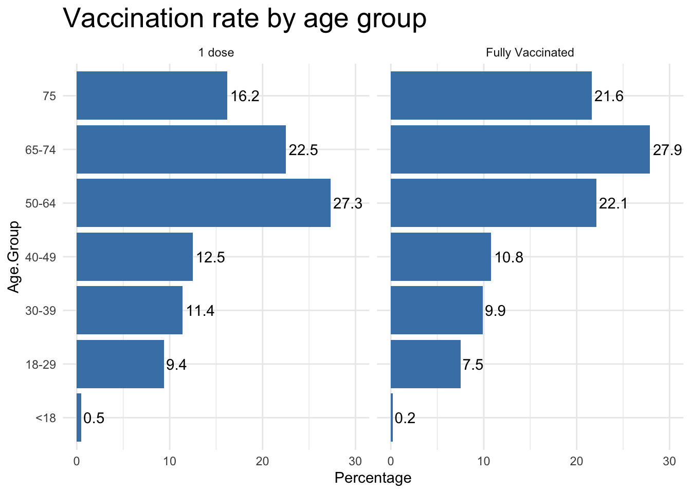
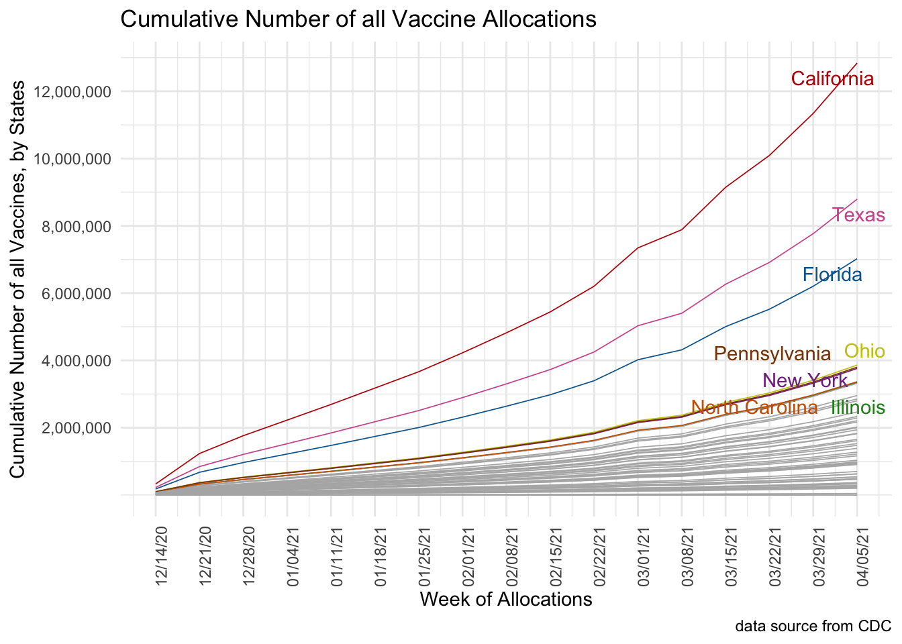
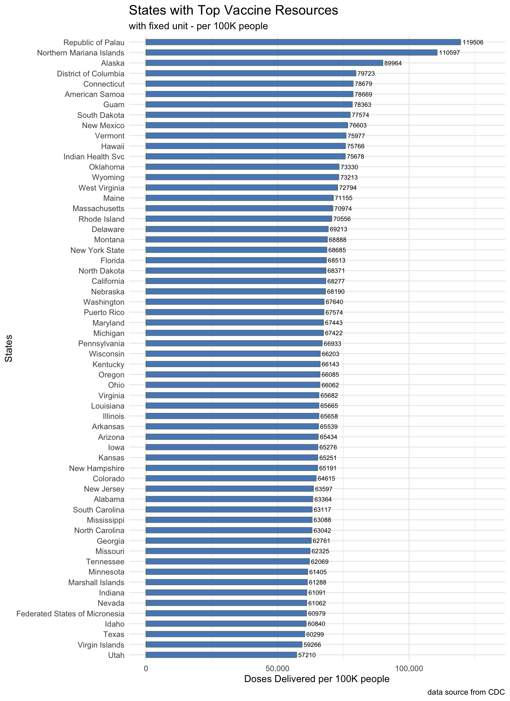

Chapter 5 Results
5.1 COVID-19 Spread
First things first, we want to get a general picture of COVID-19’s spread in US. Intuitively, the confirmed cases and death cases number of COVID-19 can reflect its spread most efficiently. So, to gain a direct view on these two data, we use heat map to plot out the number of cases confirmed and deaths by state on the US map.
From the plots, we can see that some states a severely higher than others.
Then, we plot out the number of cases and death over time to see how COVID-19 developed in the past year.

5.2 Data Analysis on Vaccinations
After gaining the general picture of COVID-19’s impact in United States, we look into the data of newly developed vaccines.
There are 3 types of COVID vaccine currently available: Pfizer, Moderna, and Janssen. We choose to compare how different vaccines are distributed in US.
We thought of picking the most widely-used vaccine Pfizer and analyze its trend. However, we soon discovered that some states use Pfizer more often compared to Other states. Therefore, analyzing Pfizer vaccine alone doesn’t give any insight about vaccine usage across the country. Only cross-comparison of the three vaccines can give a complete image of how vaccines are used.
5.2.1 3 Types of Vaccine Allocations Analysis
First, Let’s look at the most well-known Pfizer Vaccine:


Pfizer vaccine is the first vaccine that was put to use (President Joe Biden also used this vaccine). From the graph Pfizer Vaccine Allocations in the Top 8 States, we can see that the trends of distribution of Pfizer Vaccine appear similarly in the top 8 states. We see an increase of doses after the week 02/15/2021. This is because we see a significant increase of vaccine production at that period. The distribution of Pfizer has been increasing until last week, where we see a drop in doses.
Also, the weekly allocations to each state stays quite steadily in terms of the ranking. e.g. California always gets the largest amount of Pfizer vaccine.
From the Cumulative Number of Pfizer Vaccine Allocations, by State table, we can easily see that there are barely any crossing line between each state.
So there may exist a fixed ratio for the Pfizer vaccine distribution to each state.
Next is the Moderna Vaccine:
Moderna vaccine was put to use a week after Pfizer Vaccine. We see that the pattern is similar across the top 8 states. The trend is also very steady, with an increase at the week 01/25/2021, and then maintain flat after 02/15/2021.
There is still no crossing line between each state in the Culumulative graph, so the assumption of fixed ratio holds for Moderna, too.
At last we look at Janssen Vaccine:
Janssen Vaccine by Johnson&Johnson was put to use late February 2021. We see a huge increase of Janssen vaccine after it was put to use. The advantage of this vaccine compared to the others is: Janssen vaccine is easy to store (at refrigerator temperature), and it only requires a single shot. Therefore, it is getting more and more welcomed in U.S. Despite its low overall-efficacy, Janssen is found to be protective against new COVID variants. This is another reason why it’s popular.
And agian, there is no crossing line in the Culumulative graph. The assumption of fixed distribution ratio for each state holds for all three vaccines.
We then plot the total distributions of the three vaccines across the country:
 We see that the distributions of the two traditional vaccines (Pfizer and Moderna) have been steadily growing, and the new vaccine Janssen has become more and more popular in the past month. By the end of last week, we can see that the three vaccines are somewhat equally popular across the country.
We see that the distributions of the two traditional vaccines (Pfizer and Moderna) have been steadily growing, and the new vaccine Janssen has become more and more popular in the past month. By the end of last week, we can see that the three vaccines are somewhat equally popular across the country.
Above is a plot showing the overall cumulative amounts of each vaccine that has been distributed since their release. We find that total amount of Pfizer has caught up Moderna and ranked first among the three vaccines in the past month. And even though that Janssen has become more and more popular, there is still a very large gap between it and the other two vaccines, in the perspective of total amount.
5.2.2 Correlation Between Vaccination Rate and Different Groups
In the previous section, we analyzed the distribution of vaccine across the U.S states. Now we want to dig deeper into the data and find out how different groups (states, ethnicity or age) are doing.
What is the vaccination rate of each state?
We want to see which states are falling behind, so that we need to make more effort for the states that are less than 30% of vaccination rate from the graph
Who we should target to get vaccinated by age group?
From the graph below we found that not a lot people from the age 0-49 are vaccinated. We should target them in the future.

Who we should target to get vaccinated by ethnicity?
From the graph below, we can see that most of the ethnicity group stay in the same stage of getting vaccination, except the Multiple/Other group. Besides, American Indian/Alaska Native and White are doing slightly better than other groups.
Yet, we would put a question mark on Multiple/Other group’s outstanding percentage of vaccination rate, as we think this may be due to their small base (less total number of people) and the difficulty of collecting data from non-specified group of people.
5.3 Level of Medical Resources/Services, accross states
Just as the plots for the 3 different vaccine’s cumulative allocations of each state. Now, we can easily derive the cumulative allocations of the 3 different vaccines in total, across past few months.
From the plot below, we can see that California, Texas, Florida, Ohio, Pennsylvania, New York, North Carolina and Illinois receive the largest amount of vaccine allocations.

So we may consider these 8 states to be the top states in terms of medical resources distribution.
This allocation preference echoes with the heat map graphs of Cases Confirmed and Deaths by states we plotted above in Sec 5.1. We can see that the colors of the top 8 states’ corresponding area in the map are brighter than the rest part. For instance, California and Texas, which rank first and second place in the vaccine distribution allocations, have brightest color in the map graphs too.
Thus, we may conclude that U.S. distributed the vaccines according to the severity of the pandemic in each state.
However, this result may also be derived from uncertain base units e.g. the different population in each state. Therefore, we choose to look back to the vaccination_us table and check the Doses Delivered per 100K people.
With the same unit of 100K people, we find that:

We get this very interesting result that none of our previous “Top Resources State” gets into the top ten states of this resources per 100K people plot.
After analyzing the amount of resources each state get, we are also interested in how well they are utilizing these vaccines. So, we plot out a rate contrast figure of the dose administrated(green) vs. delivered(grey) per 100K people.
The plot shows that the level of vaccine utilization has almost no relationship to the amount of total resources that one state gets.
And again, none of the top 8 allocation states appears in the top 10 ranking. The best one, New York State, only gets the 14th place. The state with great amount of vaccine distribution should reflect themselves on how to utilize the medical resources more efficiently.